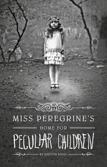

Miss Peregrine's Home for Peculiar Children
Abe Portman has told stories to his grandson Jake about battling monsters and spending his childhood at "Miss Peregrine's Home for Peculiar Children" at Cairnholm, an island off the coast of Wales. The home's children and their headmistress, Miss Alma Peregrine, possess paranormal abilities and are known as "Peculiars". One day, Jake finds Abe dying with his eyes removed, and he tells Jake to go to "the loop of September 3, 1943".
Following advice from Dr. Golan, Jake travels to the United Kingdom to go to Cairnholm with his father Frank to investigate the children’s home, learning that it was destroyed during a Luftwaffe raid. Upon entering the ruins, Jake finds children from Abe's stories. They take him through a portal and he emerges in the year 1943, when the house was still intact. Miss Peregrine greets him and explains that she belongs to a class of female Peculiars named "Ymbrynes", who can transform into birds (in Miss Peregrine's case, a peregrine falcon) and manipulate time. To avoid persecution for being Peculiars, she and her children hide from the outside world in a time loop she created, accessible only to Peculiars and set to September 3, 1943, allowing them to live the same day repeatedly and avoid aging as long as they stay inside it.
Jake is introduced to the rest of the children, including aerokinetic Emma Bloom, who he is attracted to. Jake learns he is also a Peculiar like his grandfather, and can see the invisible monsters from Abe's stories, which are called "Hollowgasts" (or "Hollows"). They are disfigured Peculiar scientists who killed an Ymbryne in a failed experiment to harvest her powers trying to achieve immortality. Led by shapeshifter Mr. Barron, they hunt Peculiars to consume their eyeballs, which allow them to regain visibly human form, but with milky-white eyes, named "Wights".
A wounded Ymbryne named Miss Avocet arrives, explaining Barron assaulted her in the January 2016 time loop at Blackpool, England, killing her children and is trying to repeat the failed experiment using more Ymbrynes. Miss Peregrine prepares to move out with her children and Miss Avocet, after learning from Jake that a Hollow may be on the island in the present after sheep were killed. Jake returns to 2016, but finding an elderly man killed by the Hollow, he goes back to the portal to warn them the Hollow is near. However, he is followed by another visitor on the island, an ornithologist who is actually Mr. Barron.
Barron had tried to extract the location of Ms. Peregrine's loop from Abe, but his hungry Hollow companion, Mr. Malthus (the one on the island), killed Abe before he could do so. He then posed as Dr. Golan, encouraging Jake to go to the island so he could lead him to the loop. Using Jake as a hostage at the children's home, Barron forces Miss Peregrine to trap herself in bird form and takes her to Blackpool, leaving Jake, the other children, and Miss Avocet as prey for Malthus.
Malthus arrives and kills Miss Avocet, but Jake and the children escape just as the Luftwaffe raid destroys the house, killing Malthus. Without Miss Peregrine to reset it, the loop closes, leaving them stuck in 1943. Rescuing a sunken ocean liner, they travel to Blackpool and enter its January 2016 loop, fight Barron's Wight and Hollow allies, and rescue Miss Peregrine and other captive Ymbrynes. Barron disguises himself as Jake, hoping to confuse the children who have come to finish him off. But when the last remaining Hollow arrives, Jake is able to see and avoid it. The Hollow kills Barron and is in turn killed by Jake.
Before the time loop closes, Jake says goodbye to the children as they exit and return to their ship in 1943 while he stays in 2016, travels to Florida and relates his adventures to Abe, who is alive and well: Barron's death in the beginning of 2016 erased his presence in Florida later on. Abe gives Jake a map of international time loops, allowing Jake to reunite with his friends and Emma in 1943. They declare their feelings for each other and kiss. The children and Miss Peregrine sail their own ship, seeking a happy time loop.
sumber : wikipedia